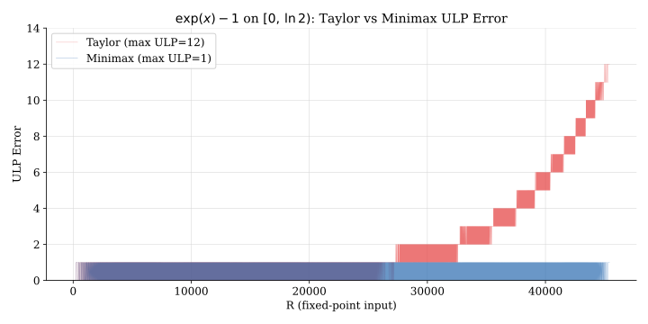
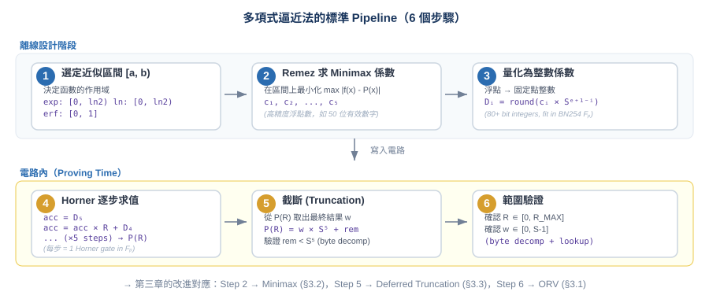
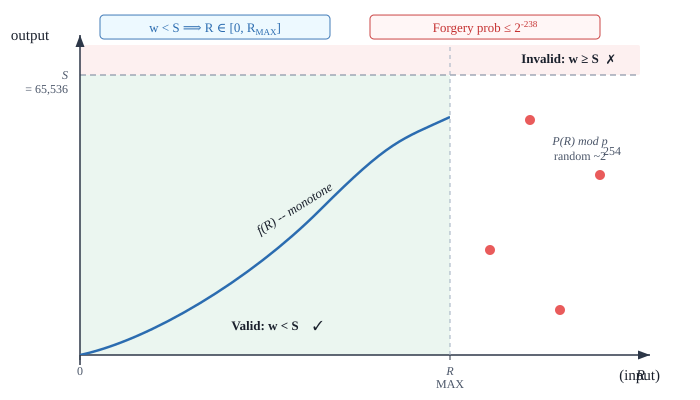
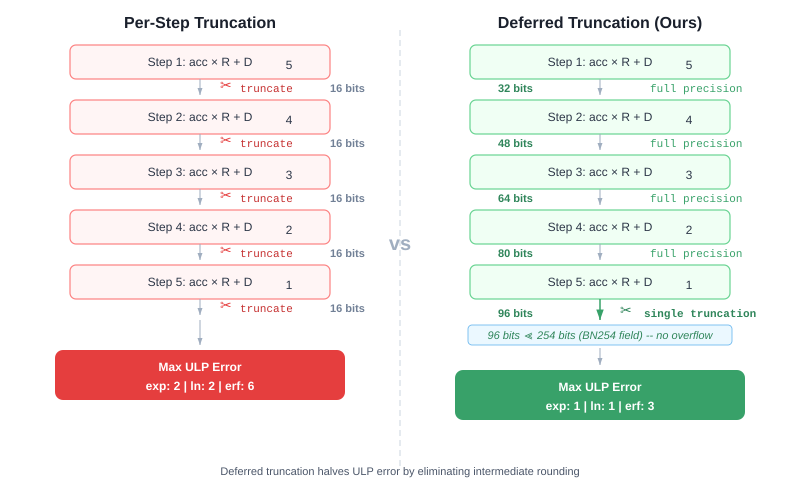
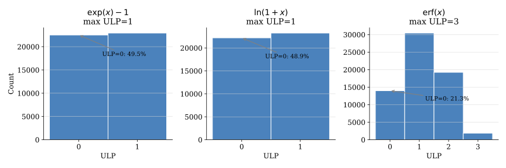
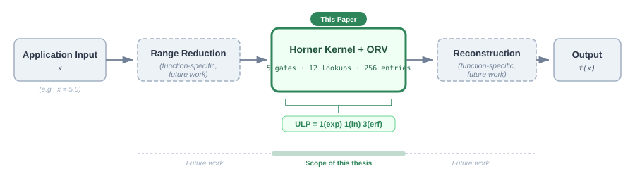
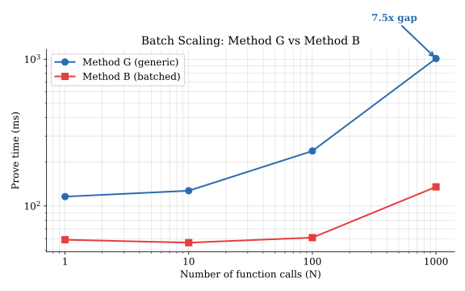

ZK 電路中超越函數的多項式近似設計方法論
Design Methodology for Polynomial Approximation of
Transcendental Functions in Zero-Knowledge Circuits
研究生：高璿程
指導教授：[左瑞麟]
日期：2026 年 3 月
零知識證明 (Zero-Knowledge Proof, ZKP) 讓一方（證明者）向另一方（驗證者）證明 「我知道某個計算的結果」，但不洩漏計算過程中的任何秘密資訊。
實際應用場景：
這些應用中，模型推論需要計算啟動函數 (activation functions)，例如：
| 函數 | 用途 | 數學定義 |
|---|---|---|
| exp(x) | Softmax, 注意力機制 | ex |
| ln(1+x) | 對數損失, 特徵轉換 | 自然對數 |
| erf(x) | GELU 啟動函數的核心 | (2/√π) ∫ e-t²dt |
| GELU(x) | Transformer 標準啟動函數 | x · Φ(x)，其中 Φ 涉及 erf |
ZK 電路在有限域 (finite field) 上運算。以 BN254 曲線為例，所有計算都在一個 約 254 位元的質數域 Fp 中進行，其中 p ≈ 2254。
math.exp()。
要在這樣的環境中計算 exp, ln, erf，需要把這些函數「翻譯」成只用整數加法和乘法的形式。
最直觀的方法：預先計算所有可能的 (輸入, 輸出) 對，存成一張表。 電路中只需要一次查表 (lookup) 就能得到結果。
用 Taylor 級數在某一點展開，取有限項作為近似。 例如 ex - 1 ≈ x + x²/2 + x³/6 + x4/24 + x5/120。
答案是可以的。我們的方法在 256-entry 表格下達到：
| 函數 | Taylor ULP | 我們的 ULP | 改善倍率 |
|---|---|---|---|
| exp(x)-1 | 12 | 1 | 12x |
| ln(1+x) | 762 | 1 | 762x |
| erf(x) | 1,467 | 3 | 489x |
ZK 證明系統（如 PLONK、Halo2）將計算表達為算術電路：由加法門 (addition gates) 和乘法門 (multiplication gates) 組成的有向無環圖。電路的每條「線」(wire) 攜帶一個 有限域 Fp 中的元素。
電路有兩種輸入：
Lookup argument（查表論證）是現代 ZK 系統的重要功能： 允許電路宣稱「某個值存在於某張預定義的表格中」。這讓我們可以用查表來替代複雜的 算術約束。例如：驗證一個值在 [0, 255] 範圍內，用 lookup 比用 8 個 bit 約束更高效。
有限域只有整數。要表達小數（例如 ln(1.5) = 0.405...），我們使用固定點表示法： 選定一個縮放因子 S = 2pp，其中 pp 是精度參數 (precision parameter)。
以 pp = 16, S = 65536 為例：
| 真實值 | 固定點表示 | 計算方式 |
|---|---|---|
| 0.5 | 32,768 | 0.5 × 65,536 |
| 0.693 (= ln2) | 45,426 | 0.6931... × 65,536 取整 |
| 0.843 (= erf(1)) | 55,227 | 0.8427... × 65,536 取整 |
| 1.0 | 65,536 | = S（超出 16-bit 範圍） |
ULP 是固定點算術中的標準精度指標：
固定點乘法會產生「多餘的精度」。例如兩個 pp=16 的數相乘：
(a × S) × (b × S) = ab × S²
結果的 scale 變成 S²，需要除以 S 才能回到正確的 scale。在有限域中，這個「除以 S」的操作稱為截斷 (truncation)：
result = (a × b × S²) / S = ab × S + remainder
截斷會丟失 remainder（餘數），這是固定點算術的精度損失來源之一。
Taylor 級數在 x = 0 處展開函數，取前 d 項作為近似：
ex − 1 ≈ x + x²/2! + x³/3! + x4/4! + x5/5!
Taylor 的特性：在展開點 (x=0) 附近非常精確，但隨著 x 遠離展開點，誤差快速增長。 更精確地說，Taylor 最小化的是局部誤差（高階導數），不是整個區間上的最大誤差。
Minimax（也稱 L∞ 最優）近似找到的是在整個區間 [a, b] 上最大誤差最小的多項式：
P* = argminP maxx∈[a,b] |f(x) − P(x)|
在 x=0 完美，在區間邊緣誤差大
誤差分佈：[小 小 小 中 大 大 大]
誤差在整個區間上均勻分佈（等振盪 equioscillation）
誤差分佈：[中 中 中 中 中 中 中]

Remez 演算法是計算 Minimax 多項式的標準方法。輸入函數和區間， 輸出最優的多項式係數。這是一個成熟的數值方法（1934 年提出）， 在 FHE（全同態加密）領域已廣泛使用，但據我們的文獻回顧，在 ZK 領域尚未被系統性地採用。
Horner's method 是多項式求值的最高效方式。對於 P(x) = c5x5 + c4x4 + ... + c1x：
P(x) = ((((c5 · x + c4) · x + c3) · x + c2) · x + c1) · x
每一步只需要一次乘法 + 一次加法。5 次多項式只需要 5 步 Horner iteration。 在 ZK 電路中，每一步對應一個 Horner gate（算術約束）：
accnext = acccurrent × R + Di
其中 R 是輸入（固定點表示）， Di 是預先計算好的係數常數。
預計算完整的 (R, w) 表格。R 是輸入，w = round(f(R/S) × S) 是對應的輸出。 表格大小 = S = 65,536 筆。電路中一次 lookup 搞定。
精度：ULP = 0（完美），但表格巨大，prove time ~1,200 ms。
利用 exp 的代數性質 ea+b = ea × eb， 將輸入拆成高低位元組查兩張小表，再乘起來。表格只需 768 筆。
在進入第三章之前，先整理一下：如果要在 ZK 電路中用多項式近似來計算一個函數， 標準流程是什麼？以下 6 個步驟，就是我們第三章所有改進的基底。

| 步驟 | 做什麼 | 輸入 → 輸出 | 例子 |
|---|---|---|---|
| Step 1 選定區間 |
決定多項式要逼近的範圍 [a, b) | 函數特性 + range reduction 策略 → 區間 | exp: [0, ln2)，ln: [0, ln2)，erf: [0, 1] |
| Step 2 求最優係數 |
用 Remez 演算法求 Minimax 多項式 | 函數 + 區間 + degree → 浮點係數 c1...cd | exp 的 c1 ≈ 0.999983 |
| Step 3 量化為整數 |
把浮點係數乘以 S 的某次方，取整為大整數 | ci → Di = round(ci × Sd+1-i) | exp 的 D1 ≈ 1.2 × 1024（~80 bits） |
| 步驟 | 做什麼 | 電路 constraint | 為什麼需要 |
|---|---|---|---|
| Step 4 Horner 求值 |
用 Horner's method 逐步計算 P(R) | accnext = acc × R + Di（重複 d 次） | 這是「算出答案」的核心步驟 |
| Step 5 截斷 |
從 P(R) 取出最終結果 w | P(R) = w × Sd + rem，且 rem < Sd | Step 3 預乘的 S 要除回來 |
| Step 6 範圍驗證 |
確認輸入 R 和輸出 w 都在合法範圍 | R = rlo + rhi × 256（byte decomp + lookup） w = wlo + whi × 256（byte decomp + lookup） |
ZK 中沒有型別系統，prover 可以填任意 Fp 值。 不做檢查 = prover 可以作弊 |
第三章的改進就是針對這 6 個步驟中的 3 個做最佳化：
| 步驟 | 傳統做法 | 我們的改進 | 效果 |
|---|---|---|---|
| Step 2 | Taylor 係數 | Minimax (Remez) 係數 | 精度改善 12x (exp) |
| Step 5 | 每步截斷 (Per-step) | Deferred Truncation | 精度改善 2x |
| Step 6 | R 和 w 分別檢查 | ORV：只查 w < S 即可 | 省 1 gate |
我們的方法是對第二章背景技術的四項改進，每一步都針對一個具體問題：
| 步驟 | 改進什麼 | 背景技術的問題 | 我們的解法 |
|---|---|---|---|
| Step 1 | 區間選擇 + ORV | 查表法需要 explicit range check | 利用單調性做 implicit 驗證 |
| Step 2 | Minimax 係數 | Taylor 精度差 | Remez 最優多項式 |
| Step 3 | Deferred Truncation | 每步截斷累積誤差 | 利用大域一次截斷 |
| Step 4 | 通用 Horner Kernel | 每個函數各自設計電路 | 同一電路，只換係數 |
在 ZK 電路中計算超越函數的完整流程分為三段：
本論文聚焦於第二段。第一段和第三段是 function-specific 的，屬於應用層責任（future work）。 以下是三個案例函數的數學分解：
正因為有 range reduction 的存在，我們的多項式只需覆蓋窄區間即可。
多項式近似在越窄的區間上精度越好。但區間越窄，覆蓋的輸入範圍越小， 可能需要額外的 range reduction 電路。這是一個設計決策：
| 函數 | 窄區間 | ULP | 寬區間 | ULP | 精度代價 |
|---|---|---|---|---|---|
| ln(1+x) | [0, ln2) ≈ [0, 0.693) | 1 | [0, e-1) ≈ [0, 1.718) | 9 | 9x worse |
| erf(x) | [0, 1] | 3 | [0, 2) | 20 | 6.7x worse |
我們選擇窄區間，優先保證精度。
傳統做法：電路中需要一個約束 R ≤ R_MAX，確保輸入在合法範圍內。
這需要額外的 gate。
我們的觀察：如果近似多項式 P 在 [0, R_MAX] 上是單調遞增的 （這對逼近單調函數的低誤差多項式自然成立）， 而且輸出 w = ⌊P(R)/S5⌋ < S，那麼：

ORV 在三個函數上的驗證結果（所有合法 R 值窮舉）：
| 函數 | 區間 | R 值數量 | ORV 失敗數 | Security |
|---|---|---|---|---|
| exp(x)-1 | [0, ln2) | 45,427 | 0 | 2-143 |
| ln(1+x) | [0, ln2) | 45,427 | 0 | 2-143 |
| erf(x) | [0, 1] | 65,536 | 0 | perfect |
這是對 §2.3 Taylor 的直接改進。電路結構完全相同（都是 Horner 求值）， 唯一的差異是把 Taylor 係數換成 Minimax（Remez 最優）係數。
以 ln(1+x) 為例，Taylor 的 5 次展開：
ln(1+x) ≈ x − x²/2 + x³/3 − x4/4 + x5/5
這些係數 (1, -1/2, 1/3, -1/4, 1/5) 是由 ln 在 x=0 的導數決定的。 它們是數學上固定的，完全沒有考慮區間 [0, ln2) 的特性。
Minimax 的係數是針對區間 [0, ln2) 最佳化出來的，允許在 x=0 附近稍微 犧牲精度，換取區間邊緣的大幅改善。結果：
| 函數 | Taylor Max ULP | Minimax Max ULP | 改善 |
|---|---|---|---|
| exp(x)-1 | 12 | 1 | 12x |
| ln(1+x) | 762 | 1 | 762x |
| erf(x) | 1,467 | 3 | 489x |
* exp 的 12x 是公平比較（兩者都用 5 個非零係數）。erf Taylor 只有 3 個非零係數（奇函數）， 所以 489x 包含了「多用 2 個參數」的優勢，不完全是 Minimax 方法本身的功勞。
這是對 §2.2 截斷問題的改進。
Horner 每一步都做截斷，把中間值限制在固定精度：
step 1: acc = trunc(c5 × R + c4) ← 截斷 1
step 2: acc = trunc(acc × R + c3) ← 截斷 2
step 3: acc = trunc(acc × R + c2) ← 截斷 3
step 4: acc = trunc(acc × R + c1) ← 截斷 4
step 5: w = trunc(acc × R) ← 截斷 5
每次截斷都丟失精度，5 次截斷的誤差累積。

利用 BN254 有限域有 254 bits 的容量，而 5 次 Horner 的中間值最多只需要 ~96 bits（遠小於 254），因此可以在整個 Horner chain 中完全不截斷， 讓精度一直保持到最後才做一次截斷：
step 1: acc = D5 × R + D4 ← 不截斷
step 2: acc = acc × R + D3 ← 不截斷
step 3: acc = acc × R + D2 ← 不截斷
step 4: acc = acc × R + D1 ← 不截斷
step 5: P(R) = acc × R ← 不截斷
final : w = P(R) / S5 ← 唯一一次截斷
精度改善（全部 R 值窮舉驗證）：
| 函數 | Deferred ULP | Per-step ULP | 改善 |
|---|---|---|---|
| exp(x)-1 | 1 | 2 | 2.0x |
| ln(1+x) | 1 | 2 | 2.0x |
| erf(x) | 3 | 6 | 2.0x |
三個函數一致地獲得 2.0x 改善。代價是最後的截斷需要 10 個 byte lookup 來驗證餘數。
將以上三個改進組合，得到一個通用的 Horner 求值電路：
| 電路組件 | 數量 | 用途 |
|---|---|---|
| Horner gate | 5 | 5 步 Horner 求值 |
| Truncation gate | 1 | 最終截斷：w × S5 + rem = P(R) |
| R byte decomp gate | 1 | 驗證 R 的位元組分解 |
| w byte decomp + ORV gate | 1 | 驗證 w < S（同時完成 ORV） |
| rem byte decomp gate | 1 | 驗證截斷餘數的範圍 |
| 總計 | 5 gates, 12 lookups, 9 rows | ByteTable: 256 entries |
實測數據（Halo2 PSE v0.3.0, KZG/SHPLONK, BN254, real proof）：
| 函數 | 區間 | Max ULP | Prove (ms) | Verify (ms) | Proof size |
|---|---|---|---|---|---|
| exp(x)-1 | [0, ln2) | 1 | 137.8 | 1.62 | 4,960 B |
| ln(1+x) | [0, ln2) | 1 | 135.9 | 1.62 | 4,960 B |
| erf(x) | [0, 1] | 3 | 137.0 | 1.62 | 4,960 B |
| GELU(x) | [0, 1] | 1 | 137.5 | 1.62 | 4,960 B |
為了證明每個步驟都有獨立價值，我們做了對照實驗（控制其他變因，只改變一個）：
| 函數 | 電路 | Table | Taylor ULP | Minimax ULP | 改善 |
|---|---|---|---|---|---|
| exp(x)-1 | 同一個 | 256 | 12 | 1 | 12x |
| ln(1+x) | 同一個 | 256 | 762 | 1 | 762x |
| erf(x) | 同一個 | 256 | 1,467 | 3 | 489x |
兩者都在 Halo2 中實際執行，KZG proof 驗證通過。差異純粹來自係數選擇。

| 函數 | Deferred (ours) | Per-step | 改善 |
|---|---|---|---|
| exp(x)-1 | 1 ULP | 2 ULP | 2.0x |
| ln(1+x) | 1 ULP | 2 ULP | 2.0x |
| erf(x) | 3 ULP | 6 ULP | 2.0x |
| 配置 | Gates | Rows | Sound? | 差異 |
|---|---|---|---|---|
| G + ORV (ours) | 5 | 9 | YES | -- |
| G + explicit RC | 6 | 10 | YES | +1 gate, +1 row |
| G - ORV (no check) | 4 | 8 | NO | 不安全 |
| 方法 | Table entries | Prove (ms) | Proof size | Max ULP | 適用函數 |
|---|---|---|---|---|---|
| A (Direct Lookup) | 65,536 | 1,244 | 736 B | 0 | 任意 |
| B (Chunk Decomp) | 768 | 61 | 2,048 B | 2 | 僅 exp |
| G (Ours) | 256 | 138 | 4,960 B | 1-3 | 任意單調函數 |
| 系統 | exp | ln | erf | 方法 | 表格大小 |
|---|---|---|---|---|---|
| zkTaylor (AAIA'24) | YES | NO | NO | Taylor + Circom | -- |
| ZKFixedPointChip | exp2 | log2 | NO | Remez deg-14 | Large |
| Lagrange Labs (ePrint'25) | YES | 未 benchmark | YES | GL quadrature + Padé | Large |
| ZIP (CCS'25) | YES | 未覆蓋 | via GeLU | Piecewise + Caulk | Lookup-based |
| Ours | YES | YES | YES | Minimax + ORV | 256 |

本論文聚焦於綠色方框：Horner evaluation kernel + ORV。 Range reduction（將任意輸入映射到多項式區間內）和 reconstruction（將結果組合回去） 是function-specific 的應用層電路，不屬於本論文的通用方法論。
ORV 使得 kernel 本身是自洽的：合法輸入得到正確輸出，非法輸入被 ORV 拒絕。 不需要在 kernel 內部做 explicit range check。
| 限制 | 影響 | 說明 |
|---|---|---|
| ULP claims scope to Horner kernel | 中 | End-to-end 精度取決於 range reduction 實作 |
| GELU 只覆蓋 [0,1] | 低 | x > 1 需要 piecewise extension |
| Batch scaling: G 輸給 B | 中 | N=1000 時 G 需 k=14 (1,011ms) vs B k=11 (135ms)。k 為電路容量參數（2k rows） |
| 線性深度 | 低 | Horner 是天然 sequential；d=5 足夠短 |

| 章節 | 內容 | 頁數 |
|---|---|---|
| Ch.1 Introduction | 問題定義、動機、貢獻概述 | ~2 |
| Ch.2 Background | ZKP, 固定點, 多項式近似, Horner | ~3 |
| Ch.3 Methodology | 四步設計方法論 | ~5 |
| Ch.4 Case Study: exp | 完整範例 + ablation | ~4 |
| Ch.5 Case Studies: ln, erf | 推廣 + 新發現 | ~3 |
| Ch.6 Related Work | 文獻比較 | ~2 |
| Ch.7 Conclusion | 貢獻、限制、未來工作 | ~1 |